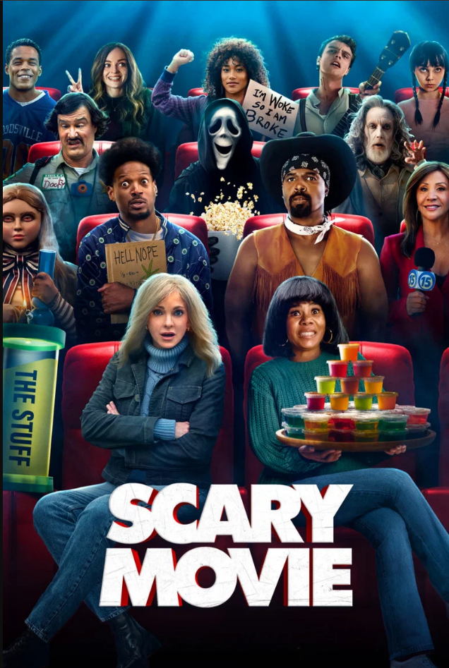
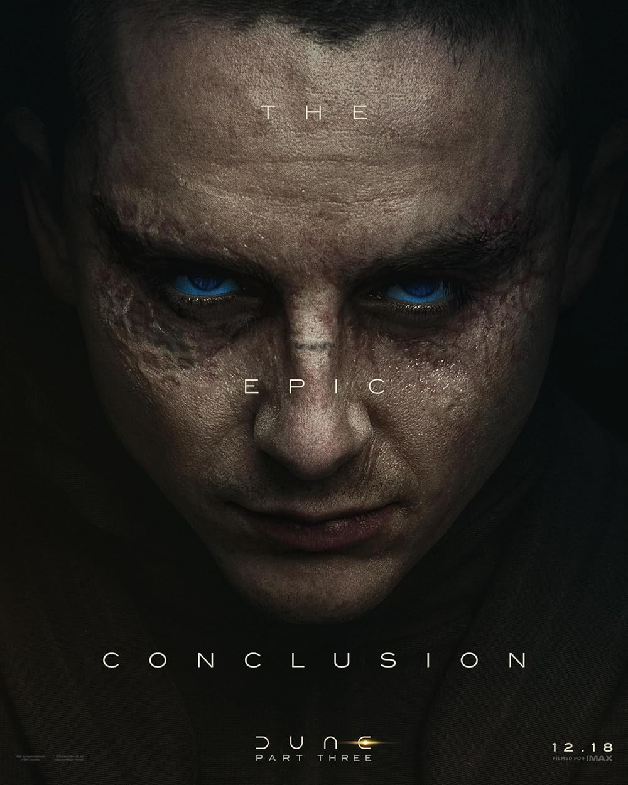

Ciencia Ficción • 120 min • +14
Un grupo de desarrolladores debe detener un algoritmo autónomo
antes de que tome el control total de los sistemas globales.

Animación • 105 min • +12
Una estudiante universitaria amante de los animales,
que transfiere su mente a un castor robótico de apariencia humana para comunicarse con los animales y
salvar su hábitat de la destrucción humana.

Comedia / Terror
Veintiséis años después de escapar del asesino enmascarado inicial,
los Cuatro del Núcleo vuelven a ser el objetivo de criminales mientras se burlan de clásicos modernos,
remakes y la cultura de la cancelación.
Estreno: 15 de Junio

Ciencia Ficcion / Cine Epico
Sigue a Paul Atreides años después de su ascenso como emperador del universo.
Atrapado por las consecuencias de una guerra santa en su nombre y visiones de una extinción inminente.
Estreno: 22 de Junio